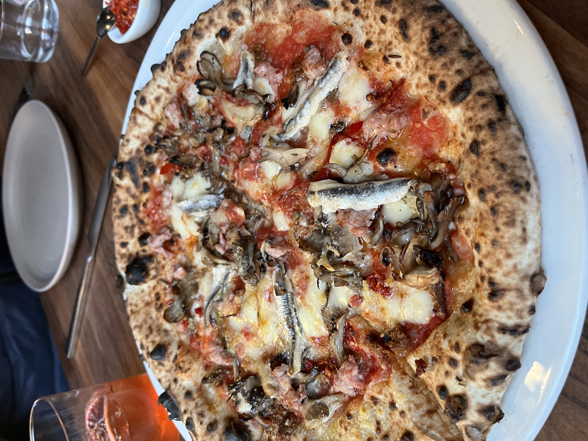

Boquerones & Lion's Mane Pizza

Description
Copycat of Flour & Water's marvelous 'Salsiccia Pizza' from 7/29/23.
Recipe from this website.
Ingredients
- Pizza dough
- Tomato sauce
- Caciocavallo or mozzarella cheese
- Lion's mane mushroom
- 6filet boquerones
- 1tbsp olive oil
- 100g pork sausage
- 30g capers
- 1/4 Sliced fresh chili
- 60g Green split olive
- Calabrian chilis to serve
Steps
- Preheat oven to the highest setting with a pizza stone inside.
- Roll dough out into around 30cm circles and add ingredients as above making sure spread them out evenly.
- Cook according to pizza dough instructions.
- Slice pizza into 6 pieces.
- Finish with 1 boquerone filet on top of each pizza slice.